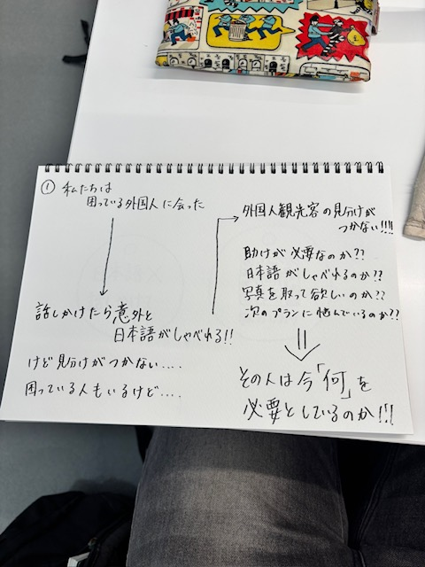
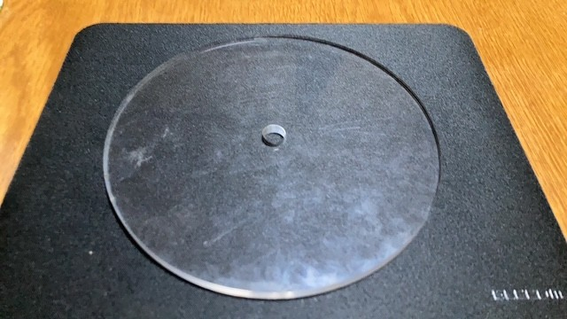
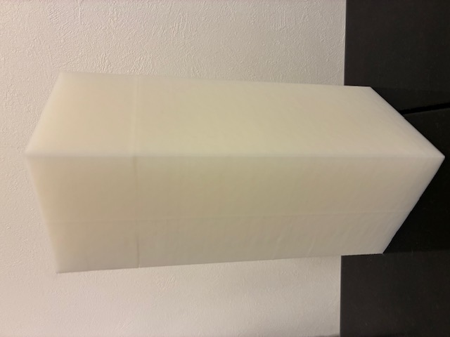
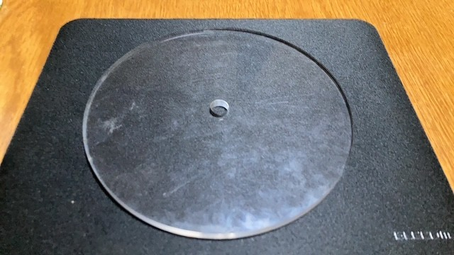
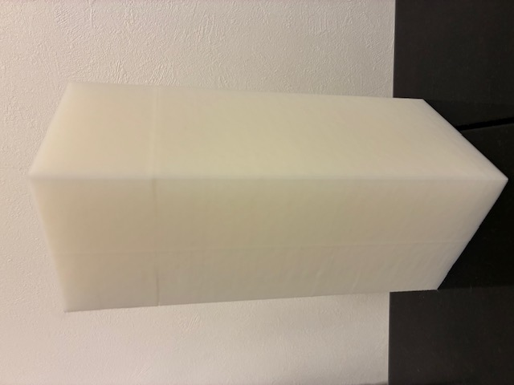
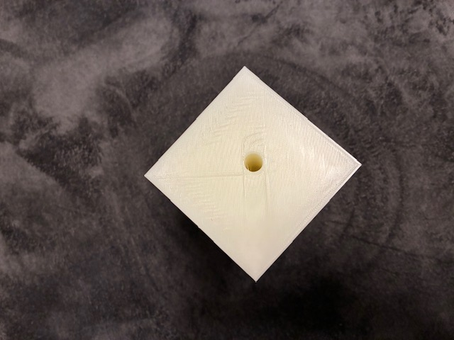

Design for Others
問題の説明
私たちの班が取り組むことにした問題は、公共交通機関（電車の窓口など）での外国人に対する対応の問題です。
タクシーの運転手や、駅員全員が英語などの外国語を話せるわけでは無いと思います。
そのため、外国人に何か質問されるようなシーンがあった場合に活用できる、多言語に対応できる看板のようなものを作ろうと考えました。
話し合っていくうちに大掛かりなものになってしまったので、班員で分担し、部品を各々作り上げることにしました。
制作前の案

製品プロトタイプ
 



長方形のものは穴をあけ、棒を通せるようにしました

動画
上に乗せた長方形のものを回転させ、相手の言語に合わせて使うというものにするつもりでした。
""
反省
今回のグループ活動を通して理解したことは、それぞれ分担してパーツを作ることは凄く難しいということです。
完成したパーツが合うのかどうかを確かめたくても、それをするためにメンバーで集まることが面倒で、
シンプルに個人で考えて作ったほうが自分の思い通りに制作できるからです。
グループで1個のものを作ろうとすると、どうしても情報がごちゃごちゃになるため、分担は大変だということを今回の活動を通して実感しました。